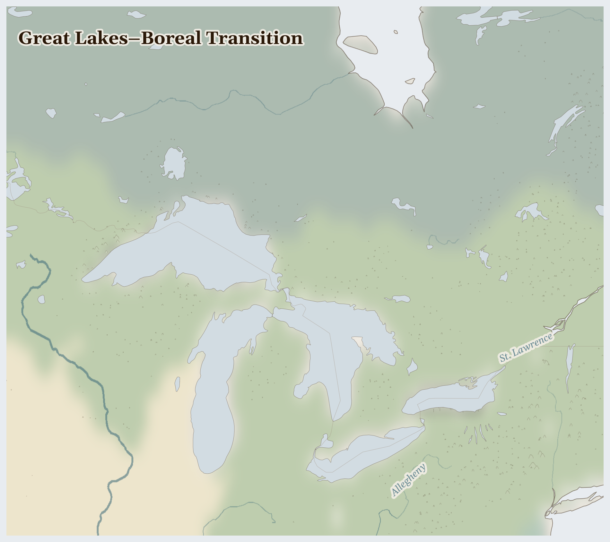

Great Lakes–Boreal Transition
United States, Canada
Nearctic
Five lakes so vast they are really inland seas — you cannot see across them, and they hold a fifth of all the fresh water on Earth. Around them stretch dark northern forests full of lakes and loons, where the autumn turns the maples flame-red.
How Life Works Here
People fish the great lakes and tap the maple trees for syrup in spring. Ships as long as skyscrapers carry grain and iron across the water. The first peoples here have long harvested wild rice from canoes, tapping the grain into the boat with a gentle stick.
Commercial fishing operations (declining), Tribal nations with treaty fishing rights.
Mining companies (Vale, Glencore), First Nations communities on and near concession lands.
Dairy farming families (consolidating rapidly), Migrant farmworkers.
What Is Happening
This is a calm and lucky place, holding treasure that is easy to take for granted: clean, drinkable water, more than almost anyone has. The care question is about keeping it clean — pipelines carrying oil run beneath these waters and the wild-rice lakes, and the treaty nations who fish them are asking that the water be kept safe for their great- grandchildren. It is good and right work.
Something Wonderful
These five lakes hold enough water to cover the whole of North and South America ankle-deep. And every autumn the maple forests blaze orange and scarlet all at once, as if someone lit the whole land — then in spring those same trees give sweet syrup for pancakes.
Let's Do Something Together
Make a Wind Flag
Tie a ribbon or strip of cloth to a stick and hold it up outside. Which way does the wind blow? Wind carries rain clouds to thirsty places — but also carries dust and smoke. In some countries, dust storms cover whole cities and people cannot breathe or see.
- stick or pencil
- ribbon or strip of cloth
For grown-ups
Atmospheric dust transport from desertifying regions affects air quality, respiratory health, and solar radiation hundreds of kilometres downwind. Saharan dust reaches Europe; Asian dust reaches North America.
Let Us Pray Together
God, calm the storms. Protect families when the dust and wind come.
Leader: We pray for those living under violence. For communities enduring fighting across Great Lak..
All: Lord, hear our prayer.
Leader: We pray for United States. Especially for United States, facing the most severe convergence of crises in this region.
All: Lord, hear our prayer.
Leader: We pray for the helpers. For humanitarian workers and missionaries in Great Lakes–Boreal Transition.
All: Lord, hear our prayer.
Leader: We pray for seeds of hope. For every act of resistance and care in Great Lakes–Boreal Transition.
All: Lord, hear our prayer.
His foundation is on the holy mountains. The Lord loves the gates of Zion more than all the dwellings of Jacob. Glorious things are spoken of you, Zion, city of our God.
Collect
O God, you declare your almighty power most chiefly in showing mercy and pity: mercifully grant to us such a measure of your grace, that we, running the way of your commandments, may receive your gracious promises, and be made partakers of your heavenly treasure; through Jesus Christ your Son our Lord, who is alive and reigns with you, in the unity of the Holy Spirit, one God, now and for ever.
Amen.
Talk About It
These families think about their great-great-grandchildren when they care for the water. What is something you'd like to still be here when you're a grandparent?
One Thing We Can Do
Next time you have maple syrup, remember it dripped from a tree by a great lake. Turn off a running tap somewhere today, and thank God for clean water — and pray it stays clean for the children not born yet.